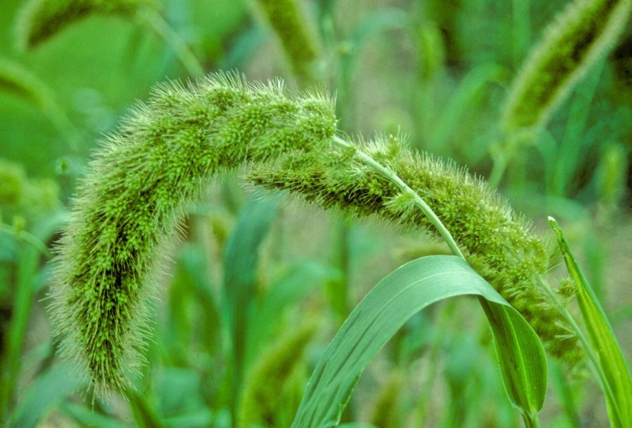

काकुनFoxtail Millet
Setaria italica · Poaceae · FLR-0282

- Scientific name वैज्ञानिक नाम
- Setaria italica (L.) P. Beauv.
- Family कुल
- Poaceae
- Hindi हिंदी
- काकुन
- Local names स्थानीय नाम
- kakun, kangni, foxtail millet
- Status here यहाँ की स्थिति
- cultivated
- Movement आवागमन
- Resident, here all year
- Known from कहाँ दर्ज
- Others have published records from the wider Awadh–Purvanchal plain, none yet from Basti–Ayodhya अवध–पूर्वांचल से दूसरों के प्रकाशित अभिलेख, बस्ती–अयोध्या से अभी नहीं
- IUCN IUCN
- not evaluated
- Review समीक्षा
- audited and independently read
When to look कब देखें
Expected mainly in May, June, July, August, September, October. मुख्यतः मई, जून, जुलाई, अगस्त, सितंबर, अक्टूबर में अपेक्षित।
Uses and possibilities उपयोग और संभावनाएँ
Drawn from the documented uses in the profile below, where each is labelled traditional, current or a research lead. All uses →
Tell it apart from इनसे अलग पहचानें
काकुन / Foxtail Millet
Setaria italica (L.) P. Beauv. — Poaceae
काकुन — एक प्राचीन अनाज फसल है जो भारत में कम उगाई जाती है लेकिन चीन में बहुत महत्वपूर्ण है। यह एक सीधे बढ़ने वाला, झाड़ीदार घास (40–150 सेमी) है। पत्तियाँ संकीर्ण, लंबी होती हैं। शीर्ष पर एक घना, नमनीय, लंबा स्पाइक होता है जो लोमड़ी की पूँछ जैसा दिखता है। दाने बहुत छोटे, गोल, पीले, सफ़ेद या सुनहरे रंग के होते हैं। स्थानीय लोग इसकी दलिया बनाते हैं। इसकी रोटी और पूरी भी बनाई जाती है। पशुओं के लिए चारा भी महत्वपूर्ण है।
Quick Identification त्वरित पहचान
| Feature | Description |
|---|---|
| Form | Erect, tufted annual grass, 40–150 cm tall, branched at base |
| Leaves | Alternate, linear, 10–50 cm long, 0.8–2 cm wide, smooth, gray-green |
| Inflorescence | Cylindrical, spike-like panicle, 5–25 cm long, 1–1.5 cm thick, drooping slightly when mature, fox-tail-like appearance |
| Spikelets | Bristles present but looser than pearl millet; single fertile floret with palea |
| Grains | Small, round, 0.2–0.25 cm diameter, variable color (yellow, white, golden, orange) |
Field tip: An erect grass with a dense, cylindrical, slightly drooping grain spike resembling a fox's tail; softer bristles than pearl millet.
Morphology आकारिकी
| Feature | Measurement |
|---|---|
| Plant height | 40–150 cm |
| Leaf length | 10–50 cm |
| Leaf width | 0.8–2 cm |
| Spike length | 5–25 cm |
| Grain diameter | 0.2–0.25 cm |
Root system: Fibrous roots with adventitious roots from lower nodes; moderately deep-rooted.
Culm: Solid, smooth, with distinct nodes; branching at base in good conditions.
Associated Species / Interactions सहजीवी संबंध
- Bird seed: Ripe spikes are eaten by munias, finches, and sparrows
- Insect host: Hosts various grain moths and beetles
- Fodder value: Entire plant provides nutritious livestock feed
- Crop rotation: Part of monsoon crop rotations with pulses
Life Cycle / Phenology जीवन चक्र
- Sowing: Sown in May–July immediately after monsoon arrival
- Germination: Emerges within 5–7 days with adequate moisture
- Vegetative growth: Grows rapidly through June–August; develops leaves and tillers
- Flowering: Panicle emergence and flowering in August–September
- Grain filling: Grains mature through September
- Harvest: Mature spikes are harvested in September–October; threshed to yield grain
Pests and Diseases कीट और रोग
- Smut: Ustilago species cause grain blackening
- Downy mildew: Sclerospora causes systemic seedling infection
- Shoot fly: Atherigona feeds on young seedlings
- Rust: Occasional rust lesions on leaves in humid conditions
Agricultural / Human Relevance कृषि प्रासंगिकता
Minor cereal grain and fodder crop.
- Grain preparation: Grains are ground into fine flour for making roti and porridge
- Nutritional value: Rich in protein, fiber, and micronutrients; good source of iron and phosphorus
- Traditional dishes: Cooked whole grains eaten as khichdi or rice-like preparations
- Roasted snack: Grains are roasted and eaten as a crunchy snack
- Fodder: Green plant provides good-quality fodder for livestock
- Cultivars: Local landraces and improved varieties available
Traditional and Ethnobotanical Use
- Minor millet: Less common than bajra or jowar but still valued in some regions
- Poultry feed: Dried spikes are fed to birds
- Traditional food: Part of traditional millet-based cuisine
Cultivation Calendar
| Stage | Month(s) |
|---|---|
| Sowing | May–July |
| Germination and growth | June–August |
| Flowering | August–September |
| Grain maturation | September |
| Harvest | September–October |
Expected Locally स्थानीय रूप से अपेक्षित
Not a field record. Written from published accounts for eastern Uttar Pradesh. No confirmed local sighting yet — if you have seen it, that is what the atlas needs.
अभी तक स्थानीय पुष्टि नहीं। यह विवरण प्रकाशित स्रोतों से है, किसी अवलोकन से नहीं।
Setaria italica is expected as a monsoon cereal crop in Basti district. Look for it in fields from May through October, recognizable by erect grass plants with dense, slightly drooping, fox-tail-like grain spikes. The first local record would be a photograph with date and location.
Distribution वितरण
Global range: Domesticated in China; now cultivated in Asia, with limited cultivation elsewhere.
In India: Grown on limited acreage; more common in North India than South.
In Uttar Pradesh: Cultivated sporadically in plain districts during monsoon season.
In Basti district / eastern UP: Cultivated resident; grown by farmers interested in millet crops.
Research Questions शोध प्रश्न
- How does the grain yield of foxtail millet compare with pearl millet and sorghum in similar conditions? / काकुन की पैदावार बाजरे से कैसे अलग होती है?
- Can the nutritional content of foxtail millet grains be tested in schools?
- Does the drooping of the spike affect the ease of harvesting by hand?
- How do the grain size and color affect consumer preferences in local markets?
- Can children thresh foxtail millet spikes without grain loss, and compare efficiency with pearl millet? — A comparative harvesting skills activity.
Similar Species मिलती-जुलती प्रजातियाँ
| Species | Key Difference | हिंदी | |
|---|---|---|---|
| Cenchrus americanus ([[pearl_millet\ | Pearl Millet]]) | Much denser bristly spike; bristles are more prominent; grains are larger | बाजरा — घने बालों वाला |
| Eleusine coracana ([[finger_millet\ | Finger Millet]]) | Panicles are finger-like with 4–5 branches; much shorter plant | मंडुआ — छोटा, पाँच शाखाएँ |
| Sorghum bicolor ([[sorghum\ | Sorghum]]) | Much taller plant; much larger grains; compact panicle | ज्वार — बहुत लंबा, बड़े दाने |
Field rule: An erect grass with a dense, slightly drooping, cylindrical spike resembling a fox's tail, containing tiny round grains, distinguishes foxtail millet.
Taxonomy & Classification वर्गीकरण
Original description. Carl Linnaeus first described the species as Panicum italicum in 1753. It was later transferred to Setaria italica by Palisot de Beauvois in 1812. The genus name Setaria is from Latin seta (bristle). The specific epithet italica refers to Italy, where it was cultivated.
Subspecies. Monotypic; cultivars vary by grain color (yellow, white, orange, red).
Family and order placement. Order Poales, family Poaceae (grass family), tribe Paniceae.
Phylogenetic notes. Setaria italica was domesticated from Setaria viridis, a wild green foxtail millet found in Asia and Africa, over 8,000 years ago in China.
IUCN status rationale. Not evaluated. As a cultivated crop, it faces no conservation threats.
Photo Gallery फोटो गैलरी
No photos yet — add field photos to media/species/foxtail_millet/ and run node scripts/sync_photos.js.
References संदर्भ
- Palisot de Beauvois, A.M.F.J. (1812). Essai d'une Nouvelle Agrostographie. Pichon and Didot, Paris, p. 178. [original description]
- Indian Council of Agricultural Research (2021). Handbook of Cereals and Pulses. ICAR, New Delhi.
- All India Coordinated Cereal Research Improvement Project (2020). Package of Practices for Minor Millets. AICCRIP, Hyderabad.
- Baltensperger, D.D. (2002). Genetic Diversity and Conservation in Foxtail Millet. Journal of Crop Production 5(1): 125–141.
- Botanical Survey of India (2015). State Flora Series: Flora of Uttar Pradesh. BSI, Kolkata.
- GBIF Occurrence Data — Setaria italica, India (2024–2026).
Source file: species/flora/crops/foxtail_millet.md